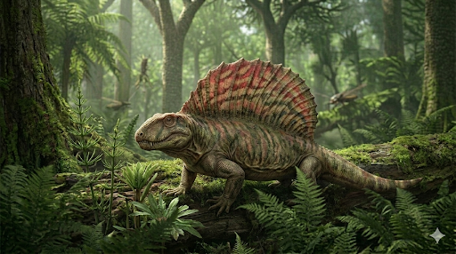

אדפוזאורוס
The Pavement Lizard: Edaphosaurus

תיק מחקר: נתונים אבולוציוניים
תקופת פעילות
318 עד 280 מיליון שנה
שלהי תור הקרבון עד תחילת הפרם
מסה ומשקל
כ-300 קילוגרם
המיני הגדולים המאוחרים
ממדים (אורך)
כ-3.5 מטרים
מבנה גוף רחב דמוי חבית
מיקום גיאוגרפי
אמריקה הצפונית ואירופה
ממצאים בולטים בטקסס, אוקלהומה, ניו מקסיקו, וכן בגרמניה וצ'כיה, סביב קו המשווה של פנגיאה.
סיווג טקסונומי קריטי
סינאפסיד (Synapsid) מהפליקוזאורים
למרות המראה, הוא אינו דינוזאור ואינו זוחל. הוא שייך לשושלת שממנה יתפתחו היונקים.
01 // ניתוח אטימולוגי נרחב
| החלק בשם | שפת מקור | פירוש ומשמעות היסטורית |
|---|---|---|
| Edaphos- | יוונית (ἔδαφος) | קרקע / אדמה / ריצוף קופ בחר בשם זה מכיוון שעל החיך ובלסת של היצור היו משטחים צפופים של שיניים קטנות ושטוחות שנראו כמו אבני מדרכה. |
| -sauros | יוונית (σαῦρος) | לטאה הלחם מלא: **"לטאת הריצוף"**. השם הוענק ב-1882 על ידי הפלאונטולוג אדוארד דרינקר קופ. |
02 // נסיבות הגילוי והממצאים: שברים, כסף ומירוץ המוזיאונים
הגילוי המקורי בטקסס (1882)
המאובנים הראשונים של האדפוזאורוס נמצאו ב"שכבות האדומות" (Red Beds) של טקסס על ידי אדוארד דרינקר קופ. הממצאים היו שבריריים וחלקיים – בעיקר גולגולות מעוכות וכמה חוליות שדרה שמהן בלטו עמודי עצם עם מוטות רוחב מוזרים. קופ, בתחילה, לא הבין שהגולגולת והחוליות המוזרות שייכות לאותה חיה, והעניק לחוליות המפרש שם נפרד (*Naosaurus*).
מירוץ המוזיאונים ומציאת השלד השלם (1910)
בתחילת המאה ה-20, המוזיאונים הגדולים להיסטוריה של הטבע בארה"ב היו שקועים ב"מירוץ תצוגה", וחיפשו שלדים שלמים ומרהיבים. ב-1910, צייד המאובנים המקצועי צ'ארלס שטרנברג יצא למשלחת ממוקדת יחד עם בניו לאזורים הנידחים של צפון-מרכז טקסס.
תגלית הזהב של שטרנברג
המאמץ הכלכלי-מדעי הזה השתלם בענק באתר היסטורי המכונה **תצורת קליר פורק (Clear Fork Formation)**, וספציפית ב**מחוז ביילור (Baylor County)**, טקסס.
שם, בתוך סלעי הבוץ האדומים, גילה שטרנברג את ה-**"Craddock bonebed"** – אתר שהפך למקור המרכזי בעולם לשלדים השלמים של האדפוזאורוס. הוא חילץ משם **שלד מחובר ושלם כמעט לחלוטין (Articulated skeleton)** של *Edaphosaurus pogonias*. השלד הזה, שבו כל חוליות המפרש המטורפות שלו נשמרו במקומן המדויק, הוכיח סופית את הקישור בין הגולגולת למפרש, ואפשר להבין את ממדי החיה.
האתגר הביומכני: חלוץ הצמחונות
ממדים: חבית עם מפרש
הגולגולת שלו הייתה זעירה להחריד ביחס לגופו העצום. בקדמת הפה שיניים דמויות-יתד לתלישת צמחייה, ומאחור "שיני הריצוף" לטחינה. בניגוד לגוף הצר של הדימטרודון, גופו של האדפוזאורוס היה רחב ונפוח מאוד.
מערכת תא התססה
עיכול של תאית נוקשה דרש פתרון. הוא פיתח מערכת עיכול פאסיבית: הגוף דמוי-החבית שלו אכלס מעיים ענקיים שפעלו כמו תא התססה (Fermentation vat). הוא בלע כמויות צמחייה ונתן לה להרקיב לאט בתוך הבטן העצומה. לכן הגולגולת הייתה קטנה – הוא היה צריך רק "מסוע" לעלים, ולא שרירי נשיכה.
חידת המפרש ומוטות הרוחב
בניגוד לדימטרודון, עמודי העצם של האדפוזאורוס היו מצוידים ב**מוטות רוחב קטנים (Cross-bars)** שבלטו הצידה, כמו תורן של ספינה עם זרועות צולבות.
- **ויסות חום:** המפרש שימש כקולט שמש. כאוכל עשב כבד, היה עליו להתחמם מהר בבוקר כדי להתחיל לעכל. מוטות הרוחב הגדילו את שטח הפנים או יצרו מערבולות קירור.
- **תמיכה לשומן:** ייתכן שהמפרש עגן רקמות שומן, כמו גבנון גמל, לאגירת אנרגיה.
- **הרתעה:** המוטות אולי מנעו מדימטרודון נשיכה בגב.